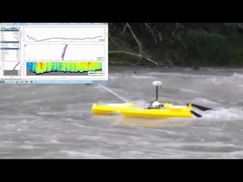

Over my 25-year career, I have held diverse roles, including data engineer, software engineer, cloud engineer, scientist, and geo-spatial analyst. My career spans government bodies, technology companies, universities, and commercial and scientific organisations. The common theme running through all these roles is my expertise in statistics, data interrogation, application development, programmatic feedback, and elucidation – visualisation and insight.
Impact though science: I have gained extensive knowledge of environmental science, hydrology, statistics, and geo-spatial data over 10 years in academia and governmental science organisations. At CSIRO, I developed deep-learning models in Python, R, and C# to predict the impact of climate change on local ecology, aquatic fauna, and rainforest assemblages. I coded ingestion routines to transform and combine vector and raster geo-spatial data files and databases into neural network input and output layers.
As a tenured researcher at James Cook University, I expanded on this work by curating multi-terabyte datasets of hydrological measures into a unified data store, ensuring accuracy, accountability, and governance. My scientific research and technological advancements resulted in co-authoring and publishing peer-reviewed journal articles and book chapters (Leblanc 2011, 2009; Bohnet 2008).
Impact though Leadership and Commercial Product Development: As the self-appointed Head of Technology at RUBIX, I built and managed a dynamic team of 4 to 15 members. By utilising the available bandwidth of non-projected consultants, I developed tailored work packages for the delivery of datasets, products, and a complete web-based SaaS platform. My team's output included creating several machine learning algorithms, code repositories and data products. Notably, I developed a machine learning algorithm—a combination of bespoke code and programmatically determined hyper-parameters—for identifying and predicting electric vehicle charging station faults. This work enabled our client to deliver less expensive hardware remediation.
Large Scale Cloud: At National Australia Bank, I developed extensive big data transfer pipelines. My deep understanding of low-level binary enabled me to control and eliminate single bit shift errors between legacy and cloud systems. Embracing data delivery patterns such as Extract, Transform, Load (ETL), Facade and Command, I built pipelines using combinations of Cloud-formation, NodeJS, Python, BASH, C, and SQL. The pipelines incorporated AWS Glue, Airflow, and Jenkins to orchestrate the ingestion, version control, audit, governance, transformation, creation, and storage of technical and business metadata into AWS data stores (S3, Redshift, and PostgreSQL).
This is a video from my home microscope. I purchased a this old microscope, I then used a Raspberry Pi and a camera to capture the video. The Raspberry Pi is connected to a monitor and the video is displayed on the monitor. The Raspberry Pi is connected to my home network and eventually the video is streamed to a web page.
Still image from my home microscope, using a piece of old plastic as a slide.
Since the 2000 the Murray Darling Basin has suffered from severe drought conditions. This project combines in-situ measurements of groundwater levels across the Murray Darling Basin (MDB). We use various interpolation methods, data filters, numerical and spatial statistics to better understand how and where the groundwater has changed.
The Murray-Darling Basin covers 1,061,469 square kilometres or approximately one-seventh (14%) of the total area of Australia (7,692,024 square kilometres).
It contains over 40% of all Australian farms, which produce wool, cotton, wheat, sheep, cattle, dairy produce, rice, oil-seed, wine, fruit and vegetables for both domestic and overseas markets. As Australia's most important agricultural region, the Basin produces one third of Australia's food supply and supports over a third of Australia's total gross value of agricultural production.
co-authored published papers
- Leblanc, M et.al. (2011) Groundwater change in the Murray basin from long-term in situ monitoring and GRACE estimates Climate change effects on groundwater resources
- Leblanc, M. et.al. (2009), Basin-scale, integrated observations of the early 21st century multi-year drought in southeast Australia, Water Resour. Res., 45

Operating the Sontek River Surveyor in the field.
The SonTek-M9 is the ultimate solution for collecting discharge data and conducting bathymetric surveys. The industry-validated and reliable M9 is an all-in-one ADCP, seamlessly combining the durability of the award-winning RiverSurveyor-M9 with the adaptable bathymetric capabilities of the HydroSurveyor-M9, offering unparalleled data collection flexibility.
Impact though Leadership and Commercial Product Development: As the self-appointed Head of Technology at RUBIX, I built and managed a dynamic team of 4 to 15 members. By utilising the available bandwidth of non-projected consultants, I developed tailored work packages for the delivery of datasets, products, and a complete web-based SaaS platform. My team's output included creating several machine learning algorithms, code repositories and data products
We've done all the hard work for you! Explore our extensive range of data sets which have been collected from multiple sources and methodically cleaned, wrangled and made ready for immediate consumption.
RUBIX Data Store